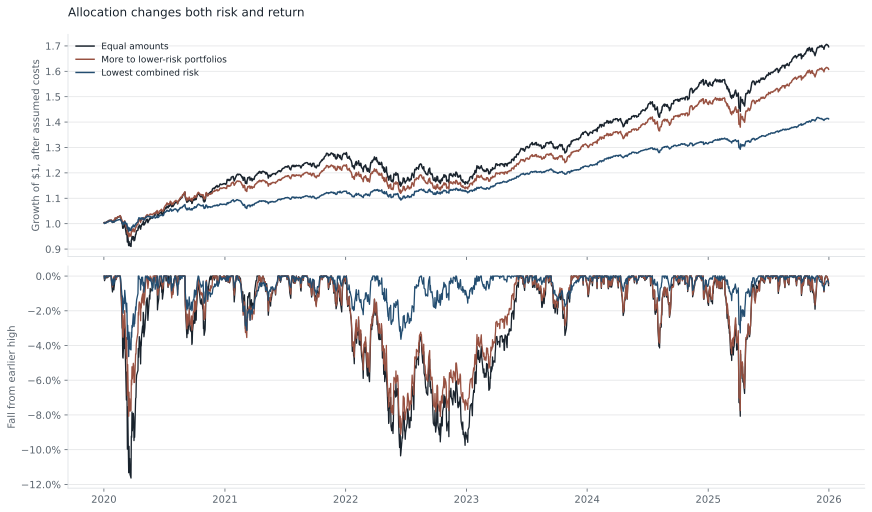
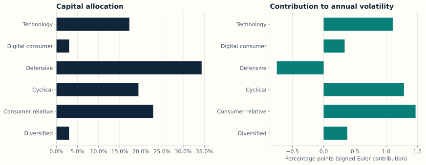
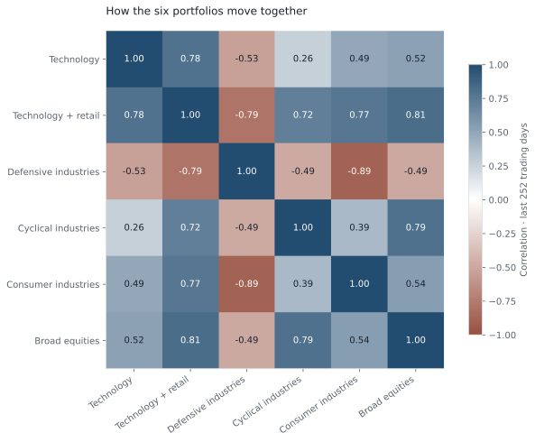
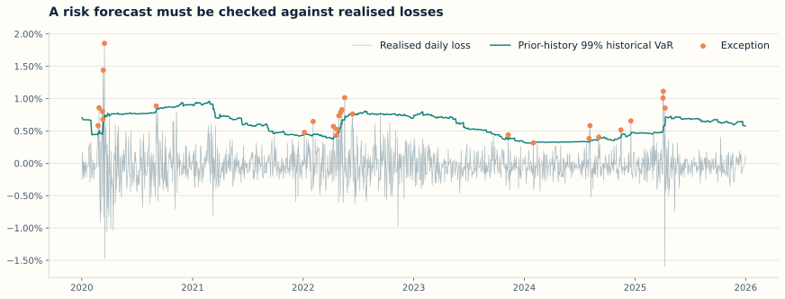

01 / Overview
How does allocation change portfolio risk?
Different portfolios can move together because they own similar exposures, even when their names and trading ideas sound different. I compared three ways of dividing money between six example portfolios.
Volatility measures how widely returns vary. Drawdown is a fall from an earlier high in portfolio value. These describe different aspects of risk: day-to-day variation and the size of losses along the path.
Equal allocation produced 8.28% volatility and 9.24% annualised return. The lowest-risk allocation cut volatility by about 53%, but its return was also lower. Annualised return is the steady yearly growth rate that would produce the same total growth over the test.
Result. Changing the allocation reduced risk in this sample. It did not deliver the same return with less risk. The choice depends on the amount of risk the investor is willing to take.
02 / Data and terms
Six example portfolios
The inputs are real daily returns for ten broad US industries and five common market factors, taken from the Kenneth French Data Library. A return is the percentage gain or loss over a period. A factor is a shared influence on returns, such as the overall market or a preference for smaller companies.
I used 2015–2019 as prior history, then evaluated the allocation rules during 2020–2025. The six portfolios are illustrative combinations of industry exposures; they are not actual fund returns or directly tradable products.
| Example portfolio | Main idea |
|---|---|
| Technology | Technology and telecoms versus manufacturing and energy |
| Technology and retail | Technology, retail and durable goods versus staples and utilities |
| Defensive industries | Staples, healthcare and utilities versus durable goods and manufacturing |
| Cyclical industries | Manufacturing, energy and other industries versus utilities and staples |
| Consumer industries | Retail and durable goods versus telecoms and other industries |
| Broad equities | Equal long exposure to all ten industries |
- Allocation / weight
- The fraction of the available money assigned to each example portfolio.
- Long / short
- A long position benefits from a price rise. A short position benefits from a price fall and requires borrowing the asset or equivalent exposure.
- Exposure
- The amount of risk linked to a particular investment, industry or market influence.
- Correlation
- How closely returns move together. +1 means perfectly together, 0 means no linear relationship, and −1 means perfectly opposite movements.
- Risk contribution
- How much one portfolio adds to the combined volatility. A negative contribution means it offsets some risk elsewhere.
- Risk budget
- The amount of risk allowed for the combined portfolio or for one part of it.
- Transaction / borrowing costs
- The assumed cost of changing positions and holding short exposures. They are estimates here, not observed trading costs.
03 / Method
Three allocation rules
At the start of each month, I compared these rules using only earlier returns:
| Allocation rule | How it works |
|---|---|
| Equal amounts | Start with one sixth of the money in each portfolio. |
| More to lower-risk portfolios | Give more money to portfolios with lower individual historical volatility. This is also called inverse-volatility weighting. |
| Lowest estimated combined risk | Choose weights that minimise estimated total volatility, accounting for how the portfolios move together. This is minimum-variance allocation. |
All three rules use the same limits: 3%–35% in each portfolio and a monthly one-way turnover limit of 15%. Turnover measures how much money is reassigned; buying and selling the same reassigned amount are counted once in this limit. I assume a trading cost of two basis points per dollar bought or sold, and an annual short-borrow cost of 50 basis points. One basis point is 0.01%.
Risk estimates use the previous 252 trading days, roughly one year. Between monthly changes, weights move with the portfolio values. No current-day return is used to make that day’s decision.
More detail on the estimates
The covariance matrix records how the returns vary individually and together. I use Ledoit–Wolf shrinkage, which pulls noisy sample estimates towards a simpler structure to make them more stable.
Risk contributions use the Euler method: each weighted exposure is assigned part of total volatility, and the parts sum to that total. Negative contributions are retained because they identify offsets.
A separate linear regression estimates sensitivity to five factors: market return, company size, value, profitability and investment. Value compares cheaper with more expensive shares on accounting measures; profitability compares stronger with weaker operating profits; investment compares companies with more conservative versus more aggressive asset growth.
The Sharpe ratio in the full results measures excess return relative to volatility. Excess return is return above the cash rate. It is reported for context and was not the optimisation target.
04 / Results
Less risk came with a lower return

| Allocation rule | Annualised return | Annual volatility | Largest fall |
|---|---|---|---|
| Equal amounts | 9.24% | 8.28% | -11.63% |
| More to lower-risk portfolios | 8.26% | 6.97% | -9.13% |
| Lowest estimated combined risk | 5.94% | 3.89% | -4.64% |
The lowest-risk method’s largest fall was 4.64%, compared with 11.63% for equal amounts. For a peak value of $100, those falls would leave about $95.36 and $88.37, respectively.
The annualised returns were 5.94% and 9.24%, respectively. Reducing exposure to riskier combinations also reduced gains during favourable periods. These figures describe this sample, rather than a promise about the next one.

At the final date, the defensive portfolio receives about 34% of the capital and has a negative risk contribution. It offsets some movement in the other portfolios. The consumer portfolio receives about 23% of capital but contributes more volatility than its capital share alone would suggest.

About 90% of fitted return variance is explained by the five common factors in the final one-year sample. Variance is volatility squared; this calculation separates common influences from the remaining unexplained movement. It suggests much of the portfolio’s risk can be understood through shared market exposures.
Implication. Allocating equal amounts of money does not allocate equal amounts of risk. Review how positions interact, including useful offsets, before changing the weights.
05 / Explore
Change the risk assumptions
Change the final allocation, volatility assumptions and exposure size. This is a saved risk estimate as of 2025-12-31, using a $10 million reference portfolio. It does not rerun the historical returns above.
Value at Risk (VaR) is a model’s loss threshold for a stated probability and time period. A 99% one-day VaR aims to be exceeded on about one day in 100 if the model is well specified. It is not a maximum possible loss.
| Example portfolio | Money allocated | Contribution to annual volatility |
|---|
At 100% on the correlation control, all six portfolios are assumed to move perfectly together. Their individual volatility stays fixed. Increasing exposure size from 1× to 2× doubles the positions relative to the $10 million reference value; under this simple model it doubles estimated risk.
Volatility contributions are shown in percentage points. They add to total volatility, apart from display rounding. The calculation assumes normally distributed daily returns, the familiar symmetric bell curve, and no expected daily gain. Real losses may be larger or more frequent.
06 / Checks
Did the loss forecasts hold up?
I compared the daily loss forecasts with what happened next. A loss beyond the forecast VaR is called an exception. A 99% model should have about 1% exceptions when it describes the risk well.

Implication. The loss model understated the frequency of large losses. Exceptions also occurred close together. Lower overall volatility did not make the tail-risk model reliable.
I also replayed the final allocation through earlier market falls. These are estimates of what that final exposure would have experienced, not the allocation method’s actual results at the time.
| Historical period | Estimated return | Change on $10 million |
|---|---|---|
| COVID sell-off | -5.22% | −$522,039 |
| 2022 rates repricing | -0.53% | −$52,624 |
| April 2025 sell-off | -1.98% | −$198,326 |
Statistical checks and alternative history lengths
The Kupiec coverage test checks whether exceptions occur at the expected frequency. The Christoffersen independence test checks whether one exception changes the chance of another on the following day. A p-value summarises how unusual the observed pattern would be under the tested model. A small value is evidence against that property; a large value does not prove the model correct.
| 99% risk model | Exceptions | Coverage-test p-value | Independence-test p-value |
|---|---|---|---|
| Historical returns | 27 | 0.005 | 0.001 |
| Normal-return assumption | 27 | 0.005 | 0.011 |
The allocation comparison was repeated with 126, 252 and 504 prior trading days. The lowest-risk method’s realised annual volatility stayed close to 3.9% across these choices. The full comparison and resampling interval are in the saved results.
07 / Limits
How to interpret the comparison
The six portfolios were selected for an understandable risk exercise. Their returns are built from industry research indices, which cannot be bought directly. The study does not establish an implementable investment strategy or the returns of a real fund.
The source files were downloaded in 2026 and contain revised historical data. The calculations use earlier rows only at each decision, but do not recreate the exact data that would have been available at that time.
The cost assumptions omit changing borrowing availability, market impact and the cost of trading at scale. The model also excludes options and other investments whose losses can change nonlinearly with market prices.
Here, overlap means shared exposures inside the example portfolio. It does not measure whether other funds hold the same securities, which is a separate meaning of market crowding.
08 / Code and sources
Review the analysis
Data: Kenneth French Data Library, ten industry portfolios and five research factors. Data remain copyright Eugene F. Fama and Kenneth R. French. The data record identifies the saved version. Covariance estimate: scikit-learn’s Ledoit–Wolf method.